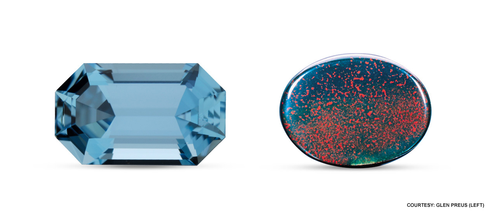
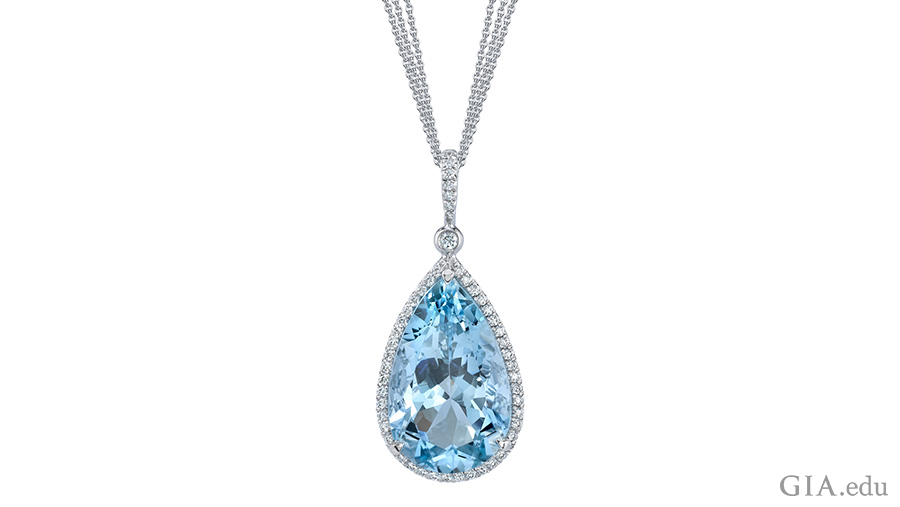
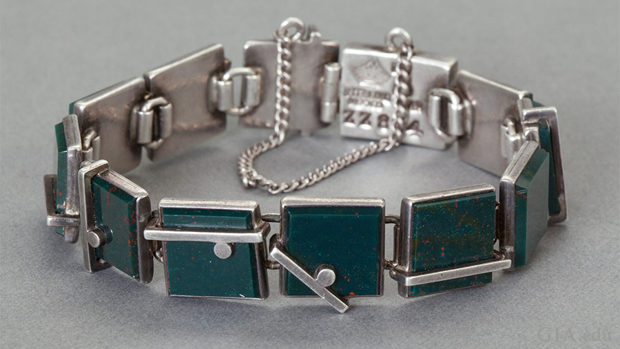
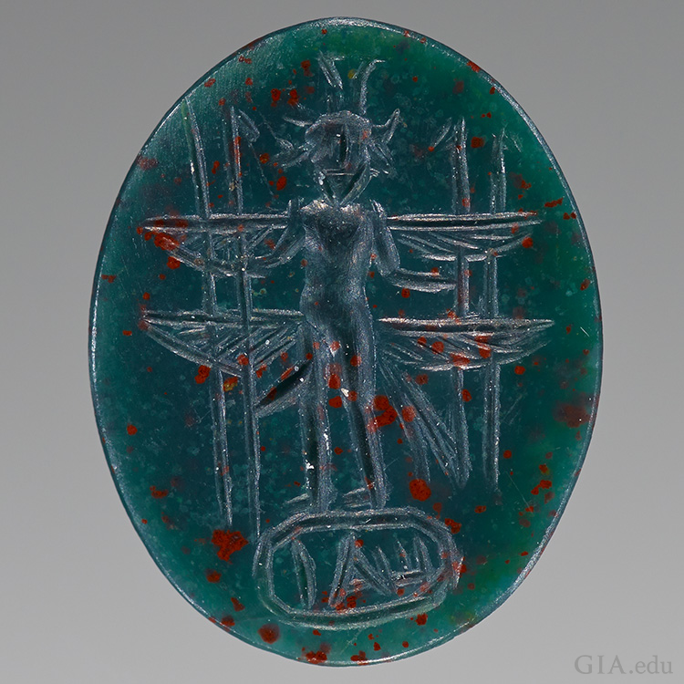

Aquamarine and Bloodstone, are very different when it comes to appearance, but share a similar reputation for protecting one’s well-being.


Ancient mariners believed that aquamarine would calm waves and keep sailors safe at sea. The March birthstone was thought to bring happiness in marriage.
It was thought to make the wearer unconquerable and amiable, and quickens the intellect.
On the 19th wedding anniversary, aquamarine is given as a present because it is the birthstone for March.
The state of Minas Gerais in Brazil has supplied aquamarine for two centuries.
Aquamarine is also found high in the foothills of Pakistan.
The March birthstone has a hard surface of 7.5-8 on the Mohs scale. It’s easy to care for the gem. To clean behind the birthstone, use warm water, dish soap and a toothbrush.

Bloodstone, also known as heliotrope, is a variety of chalcedony that is semi-translucent to opaque dark green jasper with red iron oxides.
The March birthstone has several properties. They include giving invisibility and increasing strength.
India is the most popular place to buy bloodstone today. The bloodstone is from parts of Brazil, Australia, China, and the United States. Bloodstone can be found in other rocks or in riverbeds.
Warm soapy water and a soft brush can be used to clean your bloodstone. It’s important to keep your bloodstone away from harsh chemicals. Dry off the March birthstone with a soft cloth.
It is 6.5–7 on the Mohs scale. It is important to store your bloodstone birthstone in a soft fabric to keep it from getting scratched.
The March birthstones aquamarine and bloodstone are beautiful, rich in lore. and exceptionally wearable.